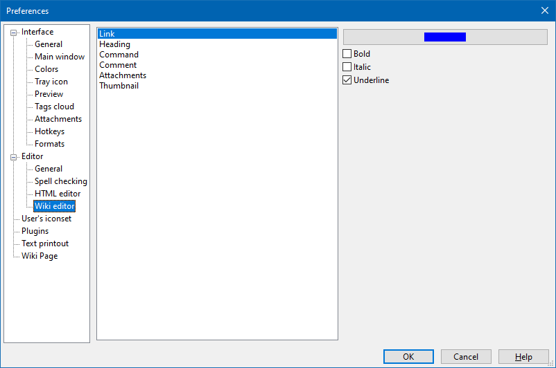

Editor - Wiki editor

This section contains settings for wiki code highlighting: links, headers,
wiki commands
(enclosed in parentheses (: ... :) )
The font face and size can be changed in
Editor - General
section.